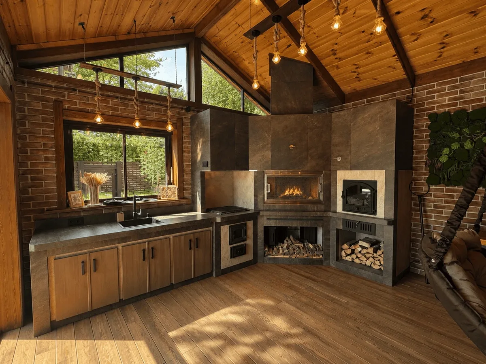
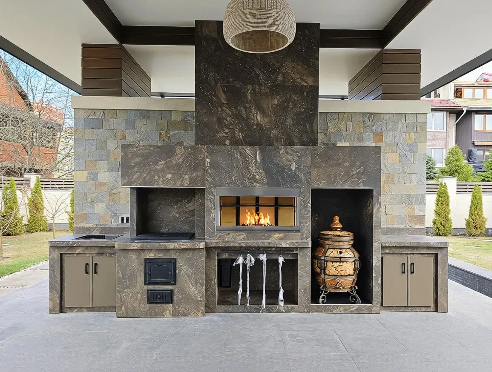

Мангальные зоны и барбекю-комплексы под ключ


Модульные барбекю-комплексы от derevo-777.ru — это готовое решение для организации функциональной кухни на вашем участке. Мы проектируем и собираем комплексы под ваши задачи, используя комбинацию печных модулей и кухонной мебели.
Состав комплекса: что мы предлагаем
Вы выбираете необходимые вам очаги, а мы интегрируем их в единую столешницу и дополняем системами хранения.
1. Печь-мангал
Основа большинства комплексов. Жаровня выкладывается шамотным кирпичом без использования глины, что обеспечивает долговечность и равномерный жар.
- Стандартные размеры топки: 70х48 см (12 шампуров), 80, 90, 100 см.
- Для коммерческого использования: 120–150 см.
- Опции: каминные дверцы (превращают мангал в камин), зольник, электровертел, подсветка, рамка-держатель для шампуров с регулировкой высоты.
2. Печь для казана
Предназначена для приготовления плова, шурпы и других блюд. Доступны объемы под казаны 12, 16 и 22 литра.
- Конструкция: чугунная плита со съемными кольцами, топка с чугунными дверцами.
- Типы: открытая (для беседок) и закрытая (для помещений, с дымосборником).
- Опции: термостойкий вентилятор (аналог вытяжки), подсветка, интеграция газовой горелки.
3. Модуль для тандыра
Теплоизолированный короб для безопасного размещения тандыра. Защищает деревянную отделку от перегрева.
- Совместим с тандырами любых производителей (включая «Амфора») и расцветок.
- Опция: внешний кожух из нержавеющей стали для защиты от искр при розжиге.
4. Мини-русская печь
Топка 60х48 см, выложенная шамотным кирпичом. Дверца со стеклом и системой поддува. Под топкой — ниша для дров. Подходит для томления каш, супов и запекания мяса.
5. Духовка-коптильня (2 в 1)
Универсальный модуль для копчения и запекания.
- Конструкция: нижняя топка, верхний жаровой ящик из пищевой нержавеющей стали с распашными дверцами.
- Комплектация: шиберная заслонка, лотки, крюки, решетки.
- Опция: внутренняя подсветка.
6. Гриль-модуль
Адаптация грилей для российского климата.
- Тип 1: теплоизолированная ниша для встраивания отдельно стоящего гриля.
- Тип 2: гриль, интегрированный в столешницу, с выдвижными ящиками для аксессуаров.
- Вентиляция: для закрытых помещений проектируется дымосборник и принудительная вытяжка.
Кухонные модули и хранение
Для организации рабочего пространства мы используем систему шкафов, изготовленных на базе металлического каркаса, обшитого влагостойкой фанерой. Это гарантирует устойчивость к осадкам и перепадам температур.
- Напольный шкаф: закрытый модуль с дверцами. Внутри можно установить мойку, посудомоечную машину, холодильник.
- Фасады: сосна, лиственница, дуб. Покрытие — укрывные краски или масла.
- Фурнитура: выдвижные ящики Blum или Hettich (рекомендуется для закрытых кухонь) с доводчиками или без.
- Навесной шкаф: устанавливается над мойкой, может комплектоваться сушилкой для посуды и врезной светодиодной подсветкой рабочей зоны.
- Барная стойка и остров: увеличивают рабочую поверхность и создают место для быстрого перекуса или сервировки. Остров может быть дополнен выступающей столешницей.
- Фальш-стена (фартук): защитная стенка высотой около 59 см и толщиной 4 см.
Когда необходима фальш-стена: при установке кухни у деревянной стены беседки (защита от брызг и жира) или в открытом навесе (предотвращает падение предметов за шкафы). Основа — металлокаркас, отделка — керамогранит.
Мы собираем комплекс с учетом планировки вашего участка. Вы получаете готовую к эксплуатации зону барбекю, где продумана каждая деталь — от места для дров до системы хранения кухонной утвари.
Обсудить проект мангальной зоны